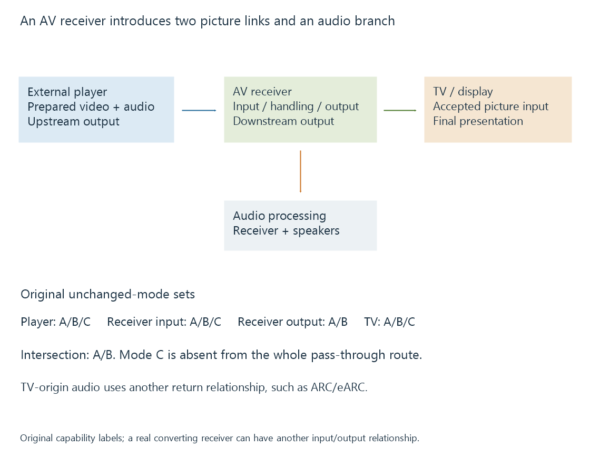

AV receivers in the video path
An AV receiver in the picture route accepts an upstream display signal, handles its audio/control roles and produces a downstream signal whose capabilities form a second connection constraint.
When a player connects through an AV receiver, the path contains two picture connections: player to receiver, then receiver to display.
The receiver is not just a length of cable. It receives an upstream signal, can use its audio and other information, and produces the downstream connection.
Each side has its own requirements

The player’s output must fit the receiver input. The receiver’s output must fit the TV input. Both installed cable paths must carry their selected signals.
Capability information presented upstream can represent an arrangement involving the receiver’s own features and the connected display. It is not always a byte-for-byte copy of what the TV would advertise directly.
EDID develops those declarations. The receiver’s particular port and mode remain relevant.
An unchanged pass-through exercise
Use three invented mode labels:
A: a chosen 1080p60 SDR mode.B: a chosen 4K60 eight-bit mode.C: a chosen 4K60 ten-bit PQ mode.
Suppose the player can produce A/B/C; the receiver input accepts A/B/C; the receiver output supports only A/B; the TV accepts A/B/C.
For this unchanged pass-through model:
Player {A,B,C}
∩ Receiver input {A,B,C}
∩ Receiver output {A,B}
∩ TV input {A,B,C}
= {A,B}
The TV’s support for C does not make C available across the whole route.
A receiver implementing format conversion can have a different relationship, with input C transformed into another accepted output. That would be a changed presentation, not unchanged pass-through. The model above deliberately excludes such conversion.
Audio can leave before the video reaches the TV
For a client connected to the receiver, the receiver can consume the HDMI audio while forwarding an implemented video output. It does not need the TV to return that same audio over ARC.
In another topology, the Emby app runs on the TV or an external player connects directly to the TV. The audio system then needs a route from TV to receiver, such as ARC or eARC.
These arrangements can expose different audio-format limits. The receiver decoding a codec at one input does not prove the TV returns that codec unchanged through every route.
Bitstream passthrough also needs the actual codec and endpoint relationship, separate from video mode support.
Picture processing can change the route
A receiver may scale, overlay its interface, convert a format or forward an accepted signal. Its selected operating behavior determines whether picture samples and signaling are preserved.
HDR and variable-refresh features need the corresponding downstream behavior. A receiver successfully forwarding an ordinary SDR mode does not establish its support for a different HDR or VRR mode.
For protected output, an HDCP-capable receiver can have a repeater role. Authentication and downstream topology are another part of the connection rather than a video-codec decoder requirement.
A direct connection is a useful comparison
Keeping the same source and requested output while comparing direct player-to-TV with player-to-receiver-to-TV changes the intermediate route.
If only the direct arrangement works, the observation narrows the problem to the added ports, links, capability handling or receiver behavior. It does not yet identify which one failed.
See Also
- HDMI Audio Return Channel (ARC)
- HDMI Enhanced Audio Return Channel (eARC)
- EDID: display capability declarations
- HDCP and protected display links
- Audio Bitstream Passthrough